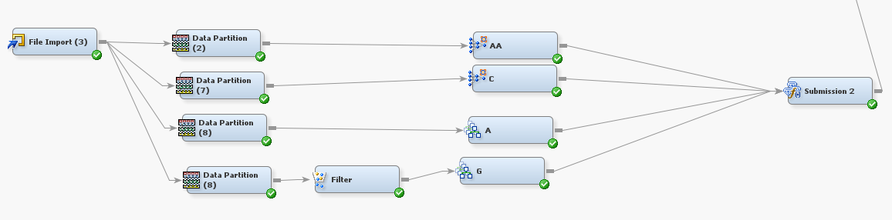

Forecasting if the firm will collapse
GitHub LinkAs one of the most popular issues in economics, bankruptcy prediction has drawn a lot of attention . The goal of financial crisis prediction is to create a predictive model that integrates numerous statistical measures and enables one to forecast a firm's financial situation. The goal of bankruptcy prediction is to evaluate a company's financial situation and its prospects for the future in the context of its long-term operation on the market.
Final Model
Two HP neural networks nodes and two gradient boosting nodes were run, and then the average of them was used for the final predictions. The “HP neural networks” and the “Gradient Boosting” nodes were used for this, and an ensemble node was utilized to average the results.
Methodology
• The target variable was highly imbalanced due to which advanced machine learning algorithms - Neural Network and Extreme Gradient Boosting were used. • Selected important variables using Logistic Regression with the regression node set to backward variable selection and selection criterion as misclassification • Used an ensemble to increase the validation ROC.Ensemble methods are techniques that create multiple models and then combine them to produce improved results. • In this project, ensembling is done using average method 
Conclusion
• Using different data partition nodes with unique random seeds helped in building more robust models in the end. From our experience, that prevented big differences in public and private scores. It also diminished the effects of overfitting models when they were ensembled. • Particularly, for this dataset, Random Forest models did not perform well, even after experimenting with different parameters and settings. • Overall, the final model was the best performer and had the least FNR amongst models that were considered.